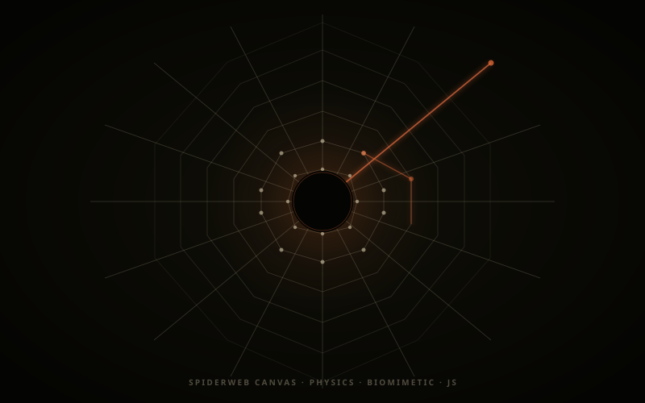

Generative Web · Physics Simulation · 2025
Procedural Spiderweb
Canvas Engine
The generative background system powering the portfolio. A radial spoke-and-ring web built from physics nodes, with spring tension, damping, wind simulation, and cursor-reactive strand vibration — running live at 60fps, invisible to most visitors yet the constant physical substrate of every interaction on the page.
Architecture
The web is defined by two sets of nodes: spoke endpoints radiating from the center, and ring nodes that sit at the intersections of concentric polygons. Every node is a mass with position and velocity. Each strand is a spring connecting adjacent nodes — with a rest length, a stiffness coefficient, and velocity-proportional damping.
Wind is implemented as a time-varying force field sampled per-node using a low-frequency sine composite. The direction and magnitude drift over time, producing the subtle, irregular swaying that makes the web feel suspended in air rather than rendered as a static graphic.
Interaction
When the cursor approaches a strand, it exerts a local displacement force on the nearest node. The perturbation propagates through the spring network as a transverse wave, attenuating as it travels. The decay time is tuned to feel like a real thread — taut enough to bounce quickly, slack enough to ring for a moment before settling.
The center void is a no-geometry zone — the spider's territory. Its radius breathes on a slow timer and expands slightly when the active UI panel is open, as if the creature is sensing the interface state. The void is enforced by testing every node against the exclusion radius each frame.